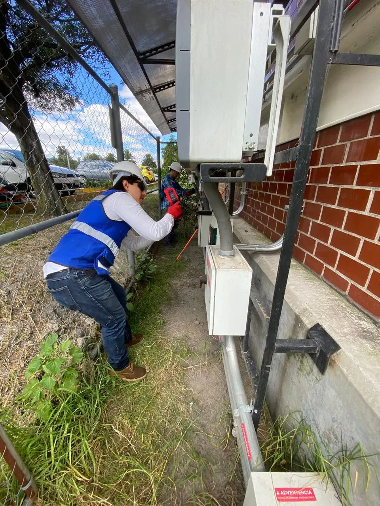
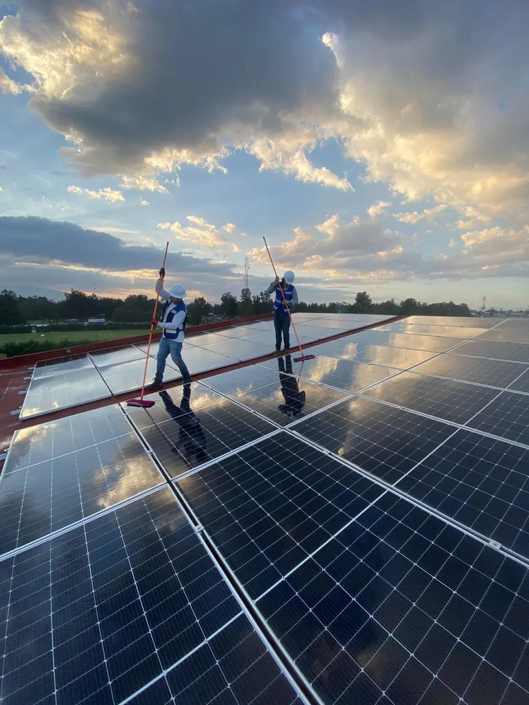
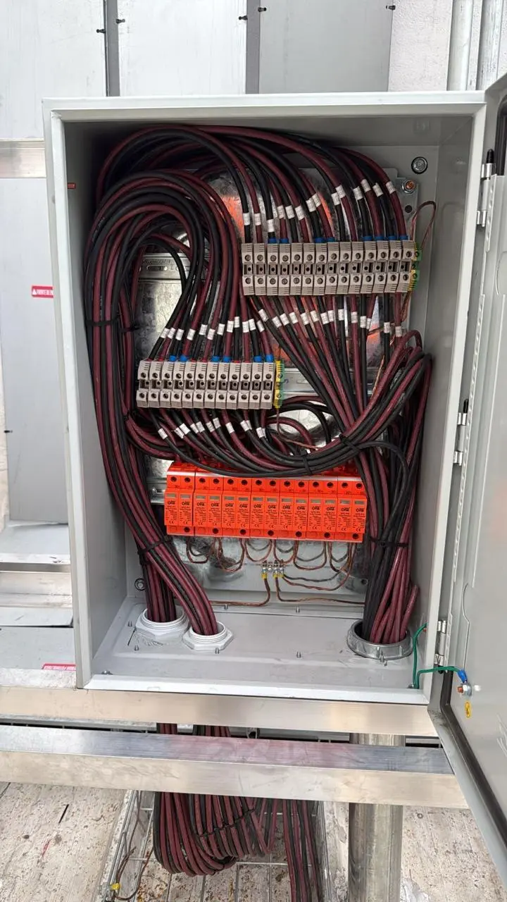
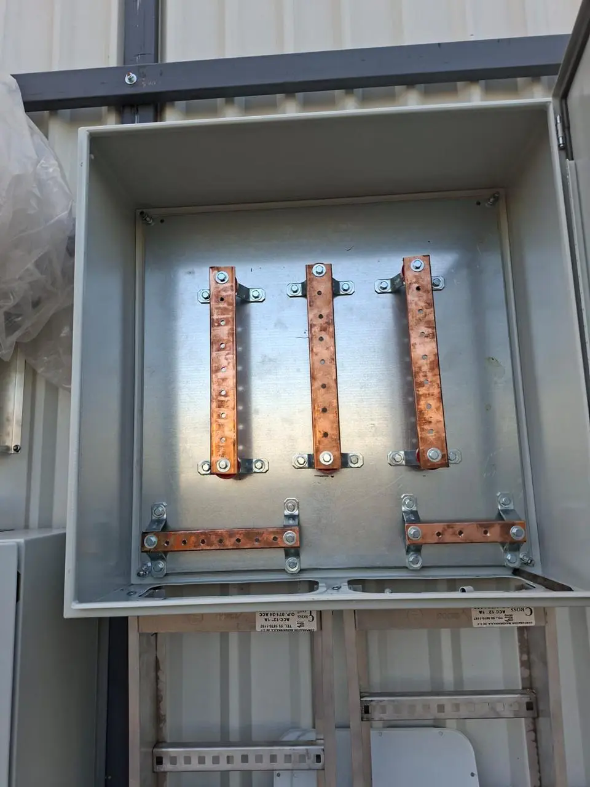
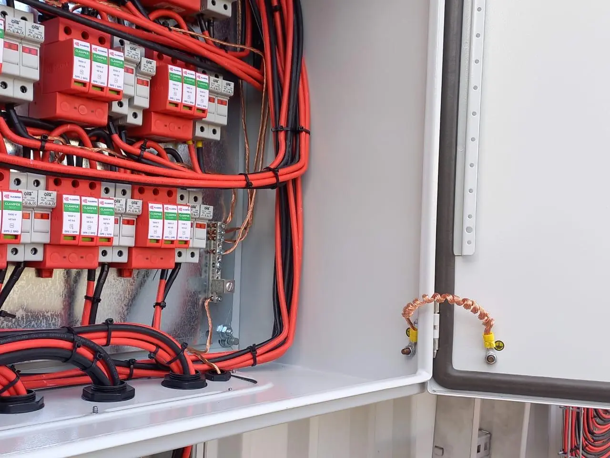
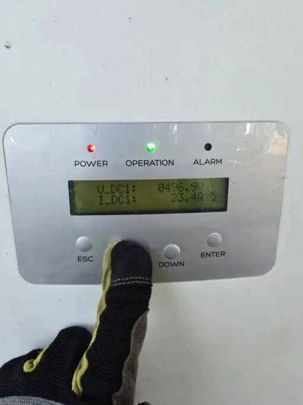
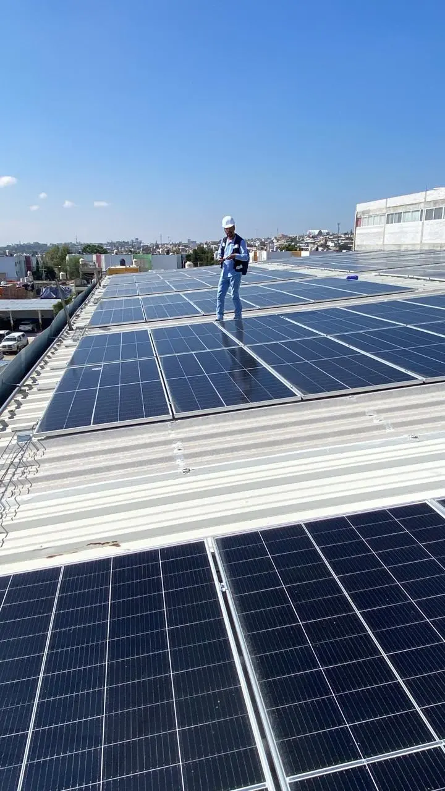

01Due Diligence Técnico-Financiero
Auditoría integral del sistema: evaluación técnica, financiera y documental para compra-venta de activos, refinanciamiento o cumplimiento regulatorio.

Diagnóstico avanzado, estudios eléctricos y pólizas de operación y mantenimiento para maximizar el retorno de tu inversión fotovoltaica.
Evaluamos el estado técnico y financiero de tu central solar con estudios que respaldan decisiones de inversión, mantenimiento y cumplimiento normativo.

01Auditoría integral del sistema: evaluación técnica, financiera y documental para compra-venta de activos, refinanciamiento o cumplimiento regulatorio.

02Análisis del comportamiento eléctrico de la red para identificar cuellos de botella, caídas de tensión y optimizar la capacidad de inyección.

03Cálculo de corrientes de cortocircuito para dimensionar protecciones y garantizar la coordinación de los dispositivos de maniobra.
 04
04
Inspección termográfica de paneles, conexiones y equipos para detectar puntos calientes, conexiones sueltas y módulos degradados sin intervención invasiva.

05Revisión de la filosofía de protección: coordinación de relés, calibración de interruptores y verificación del esquema de tierra física.
 06
06
Evaluación del Performance Ratio, disponibilidad y pérdidas para identificar oportunidades de mejora en la generación real vs. proyectada.
Imágenes reales de nuestros procesos de due diligence y diagnóstico especializado.
Un solo contrato para operar y mantener tu central durante todo el año, con cobertura preventiva, correctiva y garantía de respuesta.

Supervisión continua de la generación, alertas de fallas y reportes periódicos de desempeño.

Limpieza de módulos, revisión de conexiones, ajuste de estructuras y verificación de equipos.

Tiempos de atención preferenciales, mano de obra incluida y stock de refacciones críticas.

Documentación de cada intervención, reportes mensuales de generación e informe anual del sistema.
Actividades preventivas incluidas en la Póliza O&M Anual, agrupadas por sistema, con 2 visitas al año.
| Sistema | Actividad | Frecuencia |
|---|---|---|
| Paneles solares | Inspección visual | 2× año |
| Termografía | 2× año | |
| Inversores | Inspección visual | 2× año |
| Inspección sistema de fijación | 2× año | |
| Inspección de alarmas | 2× año | |
| Mantenimiento del sistema de control | 2× año | |
| Medición de voltajes y corrientes en los MPPT | 2× año | |
| Revisión del sistema de comunicación / Monitoreo | 2× año | |
| Estructura | Inspección visual | 2× año |
| Ajuste de tornillos de fijación | 2× año | |
| Inspección del sistema de fijación y toma de tierra | 2× año | |
| Cableado DC/AC y cuadro de protecciones | Inspección visual del tablero de protecciones | 2× año |
| Inspección del estado de las protecciones DC | 2× año | |
| Inspección del estado de charolas y canalización | 2× año | |
| Revisión del cableado, curvaturas y estado del cable | 2× año | |
| Ajuste de bornes y contactos | 2× año |

Solicita una cotización personalizada de nuestra Póliza O&M Anual.